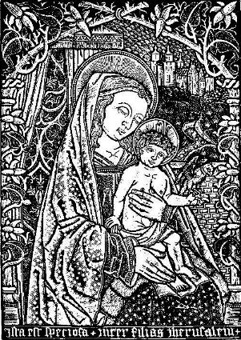
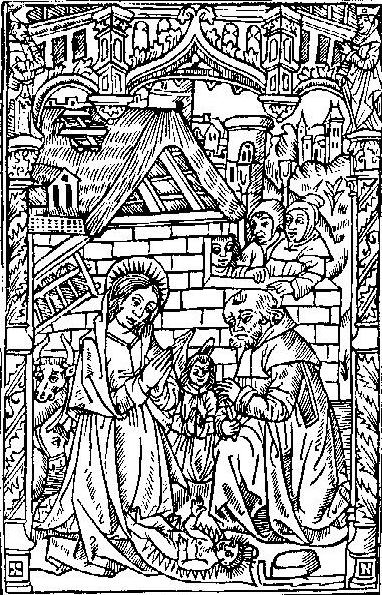

|
The
fortnight from Christmas Eve to Twelfth Day (Epiphany, January 6) was
the longest holiday of the year, when, as in a description of
twelfth-century London, "every man's house, as also their parish
churches, was decked with holly, ivy, bay, and whatsoever the season of
the year afforded to be green." Villagers owed extra rents, in the form
of bread, eggs, and hens for the lord's table, but were excused from
work obligations for the fortnight and on some manors were treated to a
Christmas dinner in the hall.
This
Christmas bonus often reflected status. A manor of Wells Cathedral had
the tradition of of extending invitations to two peasants, one a large
landholder, the other a small one. The first was treated to dinner for
himself and two friends and served "as much beer as they will drink in
the day," beef and bacon with mustard, a chicken stew, and a cheese,
and provided with two candles to burn one after the other "while they
sit and drink." The poorer peasant had to bring his own cloth, cup, and
trencher, but could take away "all that is left on his own cloth, and
he shall have for himself and his neighbors one wastel [loaf] cut in
three for the ancient Christmas game to be played with the said
wastel." The game was evidently a version of "king of the bean," in
which a bean was hidden in a cake or loaf, and the person who found it
became king of the feast. On some Glastonbury Abbey manors, tenants
brought firewood and their own dishes, mugs, and napkins; received
bread, soup, beer and two kinds of meat; and could sit drinking in the
manor house after dinner. In the village of Elton the manorial servants
had special rations, which in 1311 amounted to four geese and three
hens.
|

The Virgin &
Child
|
In
some villages, the first Monday after Epiphany was celebrated by the
women as Rock (distaff) Monday and by the men as Plow Monday, sometimes
featuring a plow race. In 1291 in the Nottingham village of Carlton, a
jury testified that it was an ancient custom for the lord and the
rector and every free man of the village to report with his plow to a
certain field that was common to "the whole community of the said
village" after sunrise on "the morrow after Epiphany" and "as many
ridges as he can cut with one furrow in each ridge, so many may he sow
in the year, if he please, without asking for license."
Excerpts from: Life in a
Medieval Village by Frances & Joseph Gies. New York:
HarperCollins Publishers, 1990.

The Nativity, from Horae, London
(Pynson), about
1497
|
Besides conviviality, carol singing,
and entertainments, the Christmas holidays brought a suspension of
everyday standards of behavior and status. On the eve of St. Nicholas'
Day (December 6), the cathedrals chose "boy bishops" who presided over
services on the Feast of the Holy Innocents (December 28), assisted by
schoolboys and choirboys. On January 1, in the Feast of Fools, priests
and clerks wore masks at mass, sang "wanton songs," censed with smoke
from the soles of old shoes, and ate sausages before the altar. During
the boisterous Christmas season the lord often appointed a special
force of watchmen for the twelve nights in anticipation of rioting.
Tenants on a manor belonging to St. Paul's cathedral, London, were
bound to watch at the manor house from Christmas to Twelfth Day, their
pay "a good fire in the hall, one white loaf, one cooked dish, and a
gallon of ale [per day]."
On Christmas Eve the Yule log was brought
in - a giant section of tree
trunk which filled the hearth, and was kept burning throughout the
twelve nights.
At the upper end of the scale, baron and
king entertained their knights
and household with a feast and with gifts of "robes" (outfits
comprising tunic, surcoat, and mantle) and jewels.
All over Europe the twelve days of
Christmas brought the appearance of
the mummers, bands of masked pantomimists who paraded the streets and
visited houses to dance and dice. In England, plays accompanied the
mumming.
New Year's, like
Christmas, was an
occasion for gift giving, and Mathew Paris noted that in 1249 Henry III
exacted from London citizens "one by one, the first gifts, which the
people are accustomed superstitiously to call New Year's gifts." "First
gifts" were omens of success for the coing year. So was the first
person who entered the house after midnight, the "first-foot," who
determined the fortunes of the family for the year. In some places this
portentous visitor had to be a dark-complexioned man or boy, in others
light-haired, while elsewhere it was considered desirable for him to be
flat-footed.
|
Excerpts from: Life in a
Medieval Castle by Joseph and Francis
Gies. New York: Harper & Row Publishers, Inc., 1974.
|